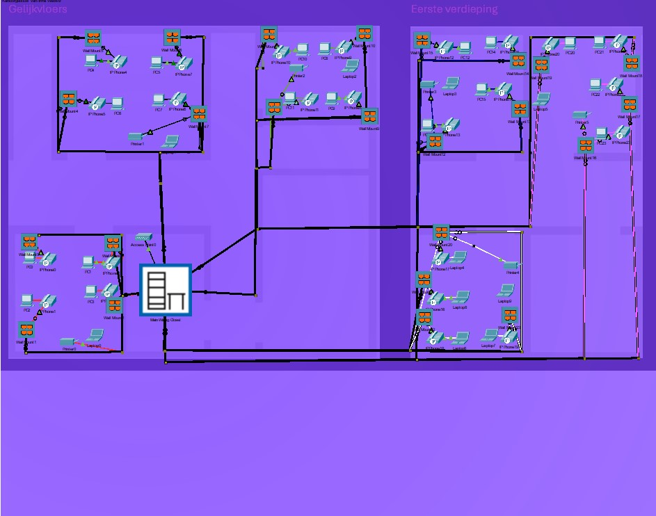

- SOFT SKILLS
- samenwerken
- probleemoplossend denken
- communicatie
- tijdmanagement
- aanpassingsvermogen
- precisie & nauwkeurigheid
Gestructureerd bekabelen



- HARD SKILLS
- netwerkontwerpen
- gestructureerd bekabelen
- cisco Packet tracer
- aankooplijst en budgettering
- technische documentatie
Bij dit project heb ik gewerkt aan een opdracht waarbij ik gestructureerd bekabelen moest toepassen in een netwerkontwerp. Het was een uitdagende maar leerzame ervaring, waarbij ik niet alleen technische vaardigheden heb opgedaan, maar ook mijn samenwerking en communicatie heb verbeterd. Samen met een medestudent moesten we een volledig netwerkplan opstellen, inclusief een aankooplijst, rack lay-out en patchplan, en dit alles ook nog eens visualiseren met behulp van Cisco Packet Tracer.
Het ontwerpen van de rack lay-out en het patchplan was een belangrijke taak in deze opdracht. Ik leerde hoe je een netwerk in een fysiek rack moet plannen, rekening houdend met de plaatsing van switches, routers en patchpanelen. Hierbij was het van belang om zowel de technische kant als de praktische kant in gedachten te houden. De keuze voor de juiste kabels en de juiste routing was essentieel om ervoor te zorgen dat het netwerk betrouwbaar en efficiënt zou functioneren.
Met de aankooplijst moesten we zorgvuldig nadenken over de benodigde apparatuur. Dit betekende dat we niet alleen moesten weten welke onderdelen er nodig waren, maar ook dat we moesten zorgen voor een realistisch budget. Dit was een goed moment om mijn kennis van netwerktechnologie te testen en te zien hoe verschillende componenten samenhangen. Het was ook belangrijk om de kosten in de gaten te houden, zodat het ontwerp zowel technisch haalbaar als financieel verantwoord zou zijn.
Een van de leukste en tegelijkertijd meest uitdagende onderdelen was het werken met Cisco Packet Tracer. Dit programma stelde ons in staat om onze netwerkontwerpen digitaal te tekenen en te simuleren. Door virtueel de netwerkapparatuur en bekabeling te plaatsen, kregen we inzicht in hoe de verschillende onderdelen van het netwerk met elkaar verbonden zouden zijn. Het was bijzonder interessant om de werking van het netwerk in de simulatie te testen, wat ons hielp om eventuele fouten in het ontwerp vroegtijdig te ontdekken en aan te passen.
De opdracht heeft me niet alleen veel geleerd over de technische kant van netwerken en bekabeling, maar ook over de praktische aspecten van het plannen en organiseren van een project. Ik heb geleerd hoe belangrijk het is om nauwkeurig en gestructureerd te werken, vooral wanneer je verschillende componenten van een netwerk in kaart moet brengen. Bovendien heb ik ervaren hoe belangrijk het is om flexibel te zijn en je plannen bij te stellen wanneer dat nodig is. Al met al was deze opdracht een geweldige manier om mijn kennis van netwerken en gestructureerd bekabelen te verdiepen. Ik kijk uit naar de komende opdrachten, waarbij ik deze opgedane kennis verder kan uitbreiden en toepassen. Het was een nuttige ervaring die me niet alleen technische vaardigheden heeft bijgebracht, maar me ook heeft geholpen om mijn soft skills verder te ontwikkelen, zoals samenwerking, probleemoplossend denken en tijdmanagement.